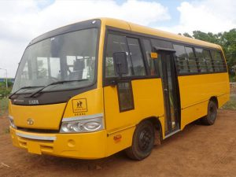
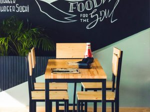

Uniform
The school has a prescribed set of school uniform which all students must adhere to. The school uniform includes shirt, pant, tie and coat. Apart from the regular uniform, students are also provided with a house T-shirt, which they need to wear during the ECAs in the school. Details regarding the uniform will be provided at the time of admission.
Transport

The school provides transportation facilities to students who require bus service to commute to and from the school. Transportation service is available only within the periphery of ten kilometers to the maximum. However, application for the bus service, however, should be made at the time of admission.
Canteen

The school has a provision of canteen for students, and they can take meal (lunch or snacks) on self-payment. The canteen serves freshly prepared and well–balanced lunch and snacks to students and staff. Students are given a choice between vegetarian and non–vegetarian food with a diverse set of menu options every day to ensure they enjoy healthy and nutritious meals.
Health
The school provides first aid services to students throughout the duration of the school hours. Minor injuries and illnesses are treated in the school infirmary. In case of major injury, the student is immediately taken to the nearest hospital, and parents / guardians are notified. In such cases, parents / students are required to bear the medical expenses.
Classroom
Classrooms are spaciously designed to accommodate thirty–six students. Student furniture is chosen so as to provide the necessary comfort and support for proper seating posture taking into account the long hours students put in inside the classroom. Each classroom is equipped with a fixed projector, and access to high-speed internet connectivity to ensure the use of technology as an aid for teaching-learning activities in the classroom.
SFK College Provides the Medical